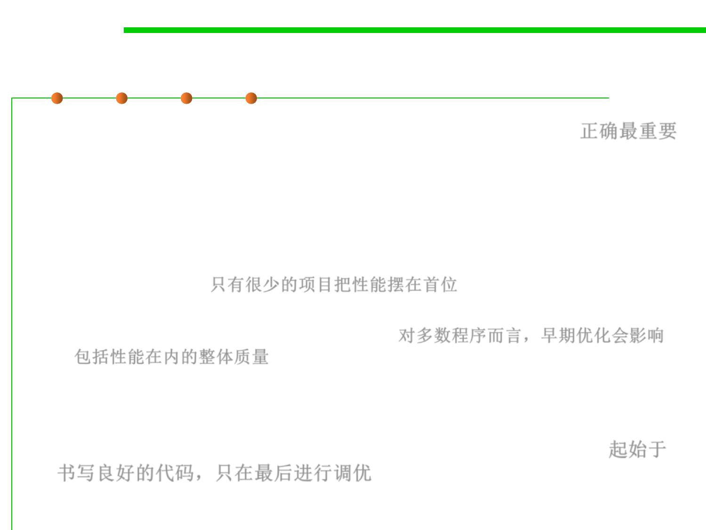

(4) Fast vs. Correct
8.3 Code Tuning for Performance Optimization
▪ A fast program is just as important as a correct one—false! 正确最重要
▪ It’s hardly ever true that programs need to be fast or small before
they need to be correct.
– For a certain class of projects, speed or size is a major concern. This class is
the minority, is much smaller than most people think, and is getting smaller
all the time. For these projects, the performance risks must be addressed by
up-front design. 只有很少的项目把性能摆在首位
– For other projects, early optimization poses a significant threat to overall
software quality, including performance. 对多数程序而言，早期优化会影响
包括性能在内的整体质量
▪ Code correctness/robustness/readability/maintainability/etc. is
usually more important than efficiency.
▪ Always start with well-written code, and only tune at the end 起始于
书写良好的代码，只在最后进行调优